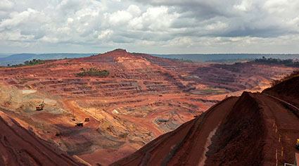

Emissão de gases poluentes na atmosfera, na Rússia, 2021. Crédito: EVGENII PANOV/SHUTTERSTOCK.COM
A pulverização de agrotóxicos em lavoura pode contaminar o solo. A imagem mostra agricultura na Ucrânia, 2022. Crédito: ROBERT BODNAR T/SHUTTERSTOCK.COM
Contaminação de rio com resíduo industrial em Magé, no Rio de Janeiro (RJ), 2018. Crédito: TOMAZ SILVA/AGÊNCIA BRASIL

A exploração mineral pode gerar vários problemas ambientais, como poluição do solo, das águas, assoreamento de rios, desmatamento, entre outros. A imagem mostra uma área de mineração no Pará (PA), 2021. Crédito: TV BRASIL